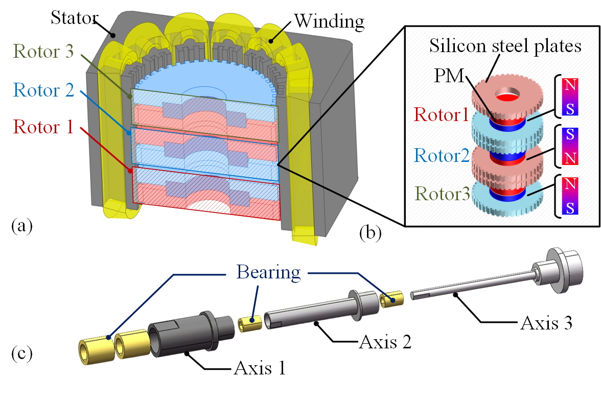
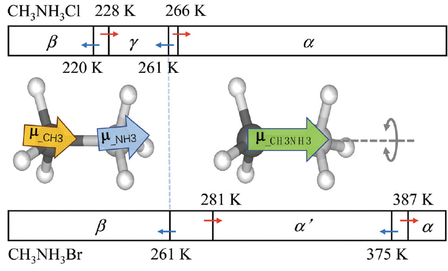

研究方向 | Research Interests
电机设计及控制, 具体包括：有限转角振动电机, 多相多自由度电机, 磁场调制电机，低温固体磁电耦合。
应用背景：机器人关节，扑翼飞行器，风力发电。
代表性研究 | Featured Research
01- 面向微型扑翼飞行器的新型有限转角振动力矩电机研究 电机拓扑优化设计
提出一种基于齿槽转矩的新型有限转角振动力矩电机，显著提升电机输出转矩和效率。通过揭示电机固有的共振特性成因，提出一种并发设计方法并成功应用于扑翼飞行器。
- XU Y, ZHAN H, YANG H, 等. Coupled Modeling and Design Principles of Limited-Angle Vibration Motors for High-Frequency Reciprocating Rotation. IEEE Transactions on Industrial Electronics, 2024. (JCR1, TOP)
- ZHAN H, XU Y, HE H, 等. Operation Analysis and Torque Performance Optimization of a Novel Self-Aligning Limited-Angle Vibration Torque Machine. IEEE Transactions on Industry Applications, 2023. (JCR2)
- ZHAN H, XU Y, HE H, 等. Operation Analysis and Torque Performance Optimization of a Novel Self-aligning Limited-Angle Vibration Torque Machine. CIEEC, 2022. (EI)
- Z. Zhang,Y. Xu, Y. Liu, 等. A Physics-Based Simulator for Bi-Directional Motor Driven Flapping Wing Micro Air Vehicles . Intelligent Robotics and Applications 2025. (EI)
- 发明专利：一种有限转角振动力矩电机结构（CN221103180U）.

02- 应用于机器人、风力发电机的多相多自由度电机系统研发 电机设计及控制
探索面向机器人多轴关节、风力发电机对转双转子系统的高紧凑、高可靠多相多自由度电机新型拓扑、优化设计及控制策略。
- XU Y, WANG J, YAN D, 等. Operation Principle and Improved Topology of a Triple-Degree-of-Freedom Seven-Phase Motor. IEEE Transactions on Industry Applications 2025. (JCR2)
- XU Y, WANG J, SHI T, 等. Operation Principle of a Novel Coaxial Triple-DOF Motor. 2024 27th International Conference on Electrical Machines and Systems (ICEMS)2024. (EI)
- 史婷娜,徐奕扬,谭本慷,等. 机器人关节用伺服电机关键技术与展望. 电工技术学报.
- 史婷娜,谭本慷,徐奕扬,等. 机器人关节伺服系统力矩控制技术综述. 中国电机工程学报.
- 发明专利：一种多轴电机及其拓扑结构设计方法（CN118783714B）.

03- 低温固体铵盐磁电耦合研究 新型电磁材料研发
探究低温下由质子运动引起的磁电耦合作用，拓展用于信息存储技术的多铁材料种类。
- XU Y, MENG L, ZHAO M M, 等. Electric polarization and magnetic properties of (NH4)1–xKxI (x = 0.05–0.17). Journal of Alloys and Compounds 2023. (JCR2)
- MENG L, ZHAO M M, XU Y, 等. Magnetoelectric coupling in organic–inorganic hybrid (NH4)I. Applied Physics Letters 2022. (JCR1)
- PENG C X, MENG L, XU Y, 等. Ferroelectricity driven by orbital resonance of protons in CH3NH3Cl and CH3NH3Br. Journal of Materials Chemistry C 2022. (JCR1)
- ZHAO M M, MENG L, XU Y, 等. Inducing Ferroelectricity in NH4I and NH4Br via Partial Replacement of Protons by Deuterons. The Journal of Physical Chemistry C 2023. (JCR2)

教育背景 | Education
2023.09
至今
至今
浙江大学 · 电气工程专业
高性能电机系统方向 · 博士 (直博研究生，在读)
高性能电机系统方向 · 博士 (直博研究生，在读)
2019.09
2023.06
2023.06
哈尔滨工业大学 (深圳) · 电气工程专业
电气工程 · 学士
电气工程 · 学士
留言与互动 | Feedback